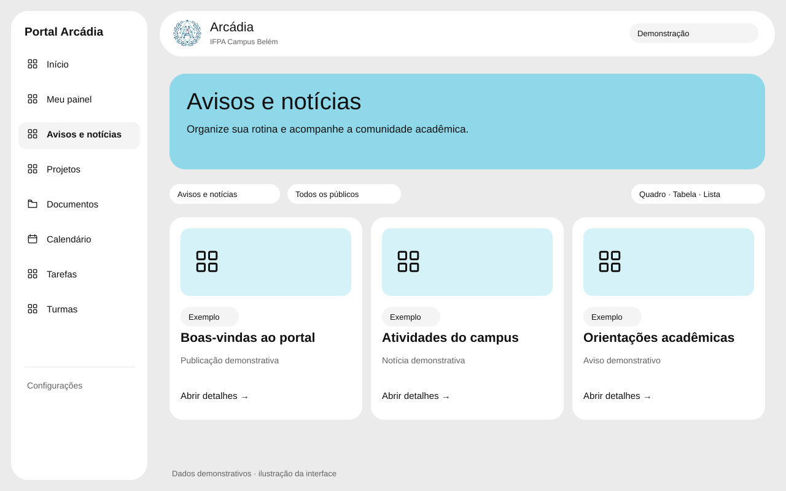
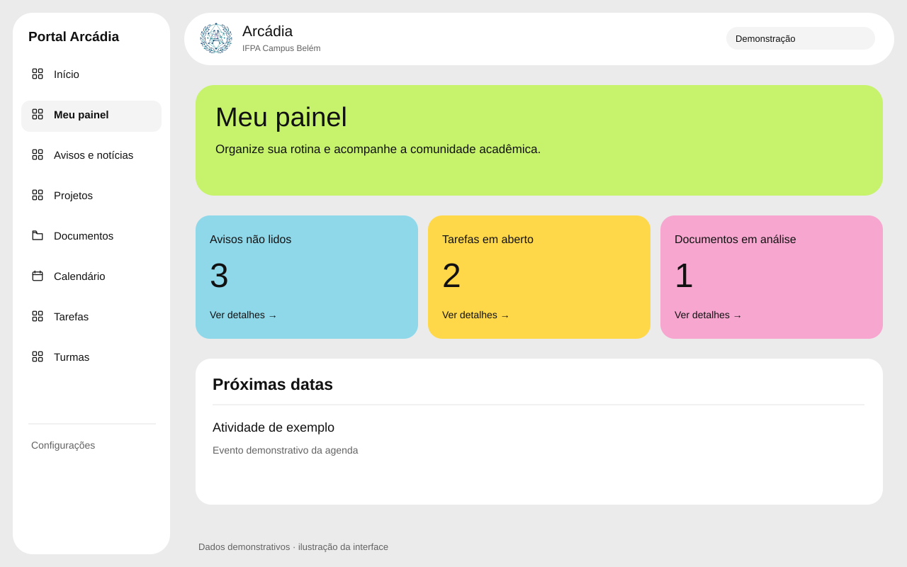
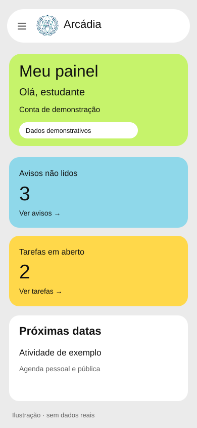
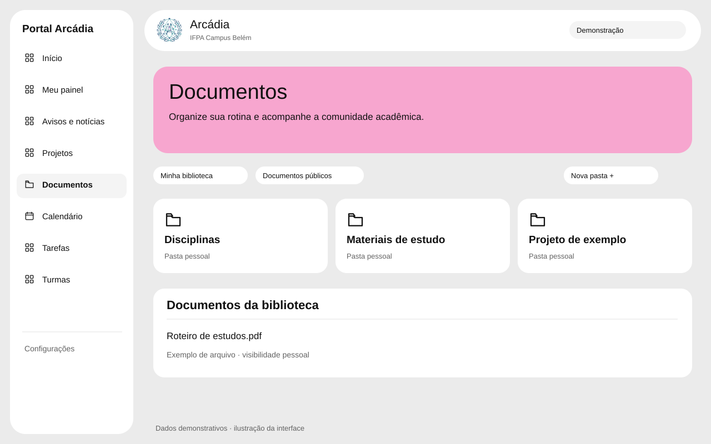
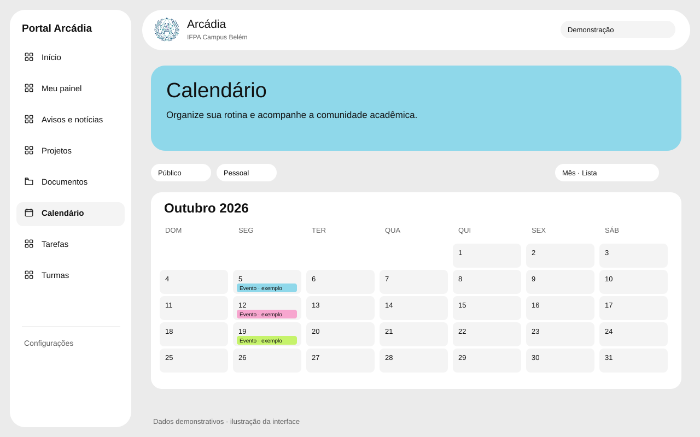
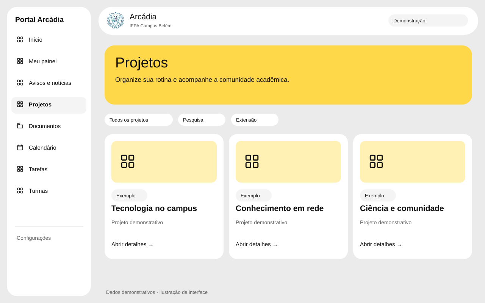

Mural oficial
Avisos e comunicados atualizados
Atualizações da coordenação acadêmica: horários de aula, cancelamentos urgentes e prazos de matrícula.

Avisos, matrículas, calendário, documentos e projetos de pesquisa do seu campus, organizados por data, categoria e público-alvo. Tudo em um só lugar.
Gratuito para alunos, professores e servidores. Cadastre-se com seu e-mail.

avisos organizados, sem depender de mensagens espalhadas em grupos.
da publicação ao acesso pela comunidade.
acesso ao portal nos períodos de provas e matrícula.
Conheça as ferramentas que facilitam sua rotina no campus. Ilustrações da interface com dados demonstrativos; não são registros reais.
Atualizações da coordenação acadêmica: horários de aula, cancelamentos urgentes e prazos de matrícula.

Acesse seu painel, acompanhe tarefas e consulte avisos em uma interface adaptada ao celular.

Organize seus arquivos em pastas, consulte documentos públicos e acompanhe solicitações acadêmicas.

Consulte eventos públicos e acadêmicos conforme seu acesso e organize sua agenda pessoal.

Conheça iniciativas de pesquisa, ensino e extensão e confira as condições de participação.

Avisos organizados por vínculo para facilitar o acesso às informações da comunidade.
Prazos, bolsas e atualizações do curso sem depender de mensagens espalhadas em grupos.
Editais, prazos de entrega e mudanças no calendário das suas turmas.
Fluxos internos, comunicados e documentos de gestão em um só lugar.
Acesso simples às informações da comunidade acadêmica.
Cadastre-se com seu e-mail. É rápido e gratuito.
Selecione seu vínculo com o campus: aluno, professor, servidor ou comunidade.
Acesse avisos, prazos e documentos no computador ou no celular.
Não encontrou o que procura? Entre em contato com a equipe:
portalarcadia.contato@gmail.comQualquer pessoa pode consultar as publicações públicas. Alunos podem criar uma conta com e-mail, senha e um curso cadastrado. Quem não tem vínculo com o campus pode escolher Comunidade externa; essa conta não dá acesso às funções institucionais. Contas de professor e servidor dependem de validação administrativa.
A entrada é por e-mail e senha. Quando habilitado, o Google permite entrar em uma conta já cadastrada, após vincular com sua senha. A recuperação de senha depende do serviço de envio de e-mail configurado. Se ele estiver indisponível, a tela informa o problema.
Não. O uso da Arcadia é gratuito. Este é um projeto acadêmico; não há plano de assinatura nem cobrança para criar conta ou usar os recursos disponíveis.
Selecionar um vínculo no formulário não concede permissões de professor ou servidor. Esses perfis precisam de autorização da administração do projeto; usar um e-mail institucional, por si só, não comprova o cargo. O cadastro público permite as opções Aluno e Comunidade externa. Não há verificação automática de vínculo com sistemas do IFPA nem confirmação automática por e-mail.
Não. A Arcadia é um projeto acadêmico para organizar publicações, tarefas, projetos e solicitações. Não consulta nem altera automaticamente notas, matrículas ou registros no SIGAA. Na aba Documentos, você acompanha solicitações; isso não gera um documento oficial automaticamente. O download fica disponível quando um arquivo é cadastrado na solicitação pela equipe responsável.
Sim. Você pode acessar pelo navegador do celular, com conexão à internet, sem instalar um aplicativo. A navegação lateral e os filtros se recolhem em telas menores para dar espaço ao conteúdo. O tema claro, escuro ou automático pode ser escolhido nas Configurações.
Gratuito para a comunidade do campus. Crie sua conta com seu e-mail.
Conheça a Arcadia e veja como usar o portal →Informações e novidades compartilhadas com toda a comunidade.
Carregando notícias…
Conheça os projetos aprovados do campus. Para participar, acesse seu painel.
Carregando projetos…